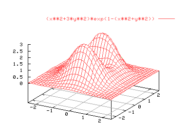
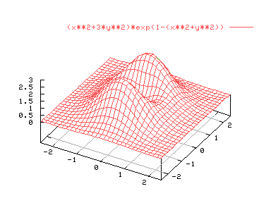
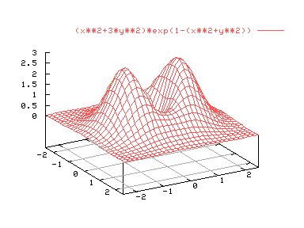
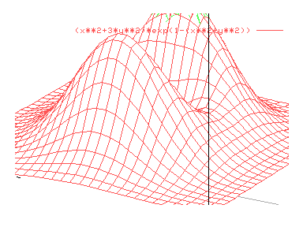

Muchas veces es deseable cambiar el punto de vista de una gráfica. El comando "set view" permite realizar el cambio de perspectiva. La sintaxis es la siguiente:
set view rot_x,rot_z
set view rot_x,rot_z,escala,escala_z
set view ,,escala
Donde rot_x y rot_z indican los ángulos (en grados) que se debe rotar la gráfica entorno a los ejes X y Z de un sistema de referencia alineado con la pantalla, en que el eje horizontal es el eje X, el vertical es el eje Y, y el eje Z sería perpendicular al monitor. El tercer número controla la escala de todo el gráfico (actúa como un zoom) y el cuarto sólo la escala del eje Z. Los valores por defecto son "set view 60,30,1,1". Ejemplos:
set hidden3d
set isosamples 30
splot [-2.5:2.5][-2.5,2.5] (x**2+3*y**2)*exp(1-(x**2+y**2))

set view 40,30
replot

set view 60,60
replot

Para ver un ejemplo de escalado:
set view 60,30,2
replot
